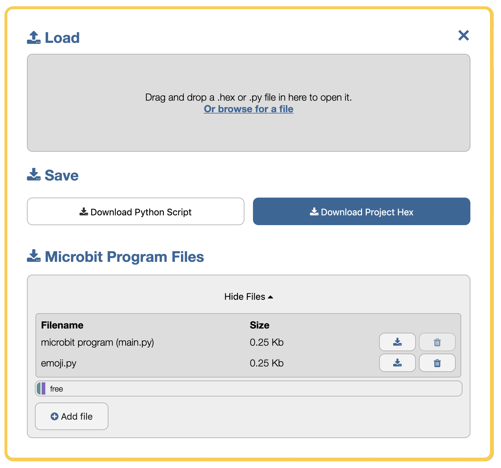

The Editor
The Python editor is perfect for those who want to push their coding skills further. A selection of snippets and a range of pre-made images, sounds and music give you a helping hand with your code. The editor is powered by the global Python Community.
Menu
The main menu of the editor contains various buttons that allow you to interact with the editor and the micro:bit device. If you have additional features enabled in the editor, for example WebUSB you may see extra buttons availble in this menu.

As well as using a mouse, you can use the TAB key to navigate through the options and Enter to activate them. If you're in the text editor, The ESC key will re-focus on the menu.
|
|
Click on the Download button to save a special "hex" file on
computer. Plug in BBC micro:bit (it'll show up as USB
storage) and drag the newly saved file onto the device. Code
will run (or you'll see an error message scroll past on the
device's display). See below for how to extract code from a
hex file back into the editor. Download becomes 'Flash' when connected over WebUSB |
|
|
The Connect button allows you to connect to your micro:bit in your browser, using a tool called WebUSB. When you choose to connect, a window will pop up in your browser asking you to choose the micro:bit, you want to connect to. If you see the message 'no compatible devices found', you may need to update the micro:bit firmware. When you are connected you will see this menu item change to 'Disconnect'. |
|
|
As well as being able to drag&drop a .Hex file or .py script into the editor to load it,
the Load/Save button will open a file window that let's you inspect the files
on the micro:bit. You can drag&drop files into the grey "drop" area or use the file
picker to browse for a file on your computer. You can also download your .hex or .py files from here too. The file system adds functionality to add or remove python modules, data logs and other file types from the micro:bit. |
|
|
The Open/Close Serial button allows you to dynamically interact with MicroPython on the micro:bit using the REPL |
|
|
This is an experimental feature. It may change in the future and could contain bugs. Clicking the Blockly button displays a set of drag-and-drop blocks that can be used to quickly create Python code. Move the blocks, watch Python code appear and change. Moving such blocks will re-write Python code and you may lose work. Furthermore, the arrangement of blocks is currently not saved, just the resulting Python code. |
|
|
Clicking on the Snippets button brings up a menu of Python short-cuts (snippets). Code snippets are short blocks of code to re-use in your own programs. There are snippets for most common things you'll want to do with Python. Select the one you want and fill in the gaps in the code editor to make it do what you want. Snippets are disabled when blockly is enabled. |
|
|
Clicking on the Help button opens a range of support options. From here you can navigate to the MicroPython language reference documentation, this help page :), the micro:bit support knowledgebase, the feedback form and the Python Editor issue tracker. |
|
|
Everyone likes to show off their awesome Python skills. These buttons are especially useful to zoom-in and zoom-out when you're trying to show code to a large group of people via a projector. |
The name and description for your script is shown on the top right hand side. Click them to edit them.
Text Editor
The Text Editor is where we write and edit our scripts.

The text editor tries to help out by colouring the text to show what all the different parts of program are. For example, Python keywords (words built into the Python language) are grey. The brighter coloured words are bits of the program you have created. Brown words are constant values that never change and purple words represent strings of characters to display. All the lines are numbered with the current line highlighted.
Hello, World!
A 'Hello, World!' program is traditionally used as a quick test to see if we've got our software or hardware configured correctly.

Here's how we do this in the Python editor:
from microbit import *
display.scroll("Hello, World!")The first line (from microbit import *) tells MicroPython
to get all the bits of Python needed to program the micro:bit.
The second line (display.scroll("Hello, World!")) tells
MicroPython to use one of those bits of Python (the display
module) to scroll the text, "Hello, World!" across the physical
display on the front of the device.
When you load the Python editor in your browser, this is the default script you will see, asking the micro:bit to scroll the words across the LED screen and then display an image of a heart.
Why not try making the micro:bit scroll your name?
Files and Modules
When the micro:bit is flashed with MicroPython, it enables a simple file system to store files on the device. You can use the file system to include external python modules in your program, similarly to using MicroPython's built-in-modules.
Selecting the Load/Save button in the menu will bring up the files modal window.

You can drag and drop files into the Load area or use the Add file button to open the file dialogue.
A status bar shows you the file types you have uploaded and how much free space you still have available. The status bar is colour coded to indicate file types; main.py is purple and the external emoji.py shown in the example is green. The main.py file is your program, the python script from the text editor. It is pre-set in the status bar and cannot be removed. If you try to upload another main.py file this will replace your code in the text editor. The emoji.py is a python module, that we can now reference in main.py.
As you add files, they will appear in a list underneath the status bar. The list indicates the filename, the file type, the size of the file and the options to download or to trash/delete the file if you have added it by accident.
The file size shown is the space it consumes inside of the micro:bit file system, not the MICROBIT drive as this is emulated storage.
Blockly
Use blockly to make new Python code from easy to assemble blocks of code.

Blockly updates Python in the code editor as you move blocks around. There are lots of different blocks to cover all the features of the micro:bit. You can make more advanced code by combining blocks together (such as in the example above).
You should use Blockly to create new code since moving blocks around will overwrite any existing code you have in the editor (and you may lose work as a result). The arrangement of blocks isn't (currently) saved, so Blockly makes a great way to make simple Python code without lots of typing. In the end, you'll learn that simply typing Python is by far the quickest and easiest way to write code.
Not all the features of the micro:bit or MicroPython are available via Blockly. We've done this on purpose. Some of the more advanced and interesting stuff is only available in pure Python.
However, by using Blockly you'll very quickly get the hang of how Python code works and fits together.
Snippets
Snippets are a cool way to avoid typing. The animation below shows you how to use them:
You can access snippets from the "Snippets" button (see above), but it's a lot quicker and easier to learn the triggers for the different fragments of code, hit the TAB key to expand the snippet and then fill in the remaining blocks of code so it does what you want.
When blockly is enabled the "Snippets" button is disabled. This avoids snippets from interfering with code that blockly may be generating.

WebUSB
WebUSB provides a simple way to connect to and control USB devices from the web. At present it is only available in browsers that are based on Google Chrome.
In the Python Editor, webUSB means that we can connect to the micro:bit, flash a .Hex file to it and communicate with it using the REPL.
If you see the message 'no compatible devices found' when you try to connect, you may need to update the micro:bit firmware.
For any issues using these features, please read our guide on WebUSB troubleshooting.
Flash
To flash the micro:bit from the browser, use the Connect button to pair the device and then choose Flash. Your program will then be transferred to the micro:bit.
REPL
The Read, Evaluate, Print Loop (REPL) is a way of dynamically interacting with the micro:bit using MicroPython. To do this, the micro:bit does four things:
- Read the user input
- Evaluate your code
- Print the response
- Loop back to step 1
To interact with the REPL on the micro:bit:
- Flash a python program to the micro:bit, if you have not done so already.
- Select Open Serial to open the REPL window.
- Where prompted, choose to Click the blue bar or press CTRL-C to enter the REPL. Once you have done so, try typing something in MicroPython.
Try these things in the REPL:
>>> from microbit import *
>>> display.scroll("Hello from the REPL")
>>> import this
>>> import love
>>> import antigravityDue to a technical limitation in the software you may experience data loss if you are sending data over serial at a high rate.
Bug Fixes
Things will go wrong!
You have to imagine Python is the most strict language teacher in the universe... yes, even more strict than that really strict one you have at school. Put simply, you have to type Python without any mistakes for it to work.
All programmers make mistakes and create bugs. It's a fact of life. When you have a bug MicroPython tries to help you out: it will scroll a message on its display. It may even include a line number.
Common bugs include Syntax Errors (which means you've typed it in wrong) and Name Errors (that mean you've typed in correct Python, but it can't work out what you're coding about).
If you're unsure what to do go read the MicroPython docs or open a support request with the micro:bit team.
Further Information

MicroPython

The version of Python that runs on the BBC micro:bit is called MicroPython. It's exactly like real Python except it's designed to run on small devices like the BBC micro:bit. You can find out more about it on the MicroPython site and by reading the MicroPython for micro:bit reference.
How the editor works
To see how the editor actually works? It's easy, to view the "source code" press CTRL-U (or CMD-U on a Mac). There's a secret message for you in the code. Can you find it?
The code for the editor lives in a repository on Github. Github makes it easy to raise a bug report and contribute to the project. For example, here's the HTML code for this help page.
What next?
Python makes it simple to write powerful programs. Can you work out what this program does?
# Press button A for a fortune cookie.
from microbit import *
import random
fortunes = [
"Never step off a moving bus",
"This sentence is false",
"The meaning of life is overrated",
"Do not touch!",
"You will receive some advice",
"My hovercraft is full of eels",
]
while True:
if button_a.is_pressed():
cookie = random.choice(fortunes)
display.scroll(cookie)How could you improve it? What changes could you make?